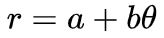

阿基米德螺線
March 8, 2022見過蚊香嗎？現代年輕一代，可能還真沒看過蚊香，來看看維基上的蚊香照：
使用公式繪製
漩渦形蚊香的路徑就是阿基米德螺線，阿基米德螺線的公式是：

根據公式，θ 為徑度，為 0 時的 r 是 a，也就是 a 控制了由內而外的起點位置，若 θ 為某徑度 radian，r1 = a + b * angle，轉一圈後 r2 = a + b * (angle + 2 * PI)``，r2 - r1 = 2 * PI * b，也就是從螺線起點、任意角往外畫一直線，與螺線任兩個的連續交點，距離一定是固定的 2 * PI * b。
那麼製作蚊香時，是依公式在轉動鋪料上去的嗎？這太麻煩了！只要等角速度轉動圓盤，然後直線地以等速由內往外鋪料就可以了，因為從公式來看，θ 的角速度相同，r 的增加速度也就相同，這就是阿基米德螺線也被稱為等速螺線的原因。
有公式的話，要畫螺線基本上不是難事，若 a 為 0：
use <polyline_join.scad>
use <util/radians.scad>
b = 3;
degrees = 1080;
degree_step = 20;
points = [
for(d = [0:degree_step:degrees])
let(
theta = radians(d),
r = b * theta
)
r * [cos(d), sin(d)]
];
polyline_join(points)
circle(1);
可以畫出以下的螺線：
喂！不是要畫阿基米德螺線嗎？怎麼畫出來的像是折線？而且還越往外越長？這是因為 degree_step 的增量故意設較大的原因，如果你只是要畫螺線，不希望看來像折線，degree_step 的增量設小一些就可以了，例如設為 1，就目前的繪圖大小而言，就應該不會看來像折線了。
然而，如果你的繪圖區夠大，螺線圈數夠多，其實到一定的圈數之後，還是會看來像個折線，這是因為程式中 degree_step 的增量是固定的，螺線圈數越多，r 越大，固定的轉動 degree_step，弧長本來就會越長，polyline_join 是將每個計算得到的點以直線連接，才會越外圈越看得出折線。
這會有什麼問題呢？如果想在阿基米德螺線上，等距地放上一些字，或者一些圖案，以上的寫法就不適合。
等距點的問題
可是我曾經用 OpenSCAD 建立的 Moving fish，看來是用了阿基米德螺線：
看來魚的骨節與骨節之間是等距，這是怎麼辦到的？最簡單的想法當然是，在螺線上每越一段距離，就畫一個愛心，確實地，是可以求得阿基米德螺線的螺線長，搜尋「archimedean spiral arc length」就可以找到公式，例如 Wolfram MathWorld 的 Archimedes’ Spiral 就有了：

如果你的點距是固定的 d，只要找出 s 為 d、2 * d、3 * d 等對應的 θ，也就是推導出 θ(s) 的公式就可以了，對吧！嗯！如果無誤差地推導出公式了，請跟我說聲…XD
因為要無誤差地推導出公式有其難度，而且化為程式運算也很麻煩，也就有了一些近似的做法，例如〈Draw equidistant points on a spiral〉有提到一些，各有其優缺點。
dotSCAD 的 archimedean_spiral 實作了一種近似方式：
use <polyline_join.scad>
use <archimedean_spiral.scad>
points_angles = archimedean_spiral(
arm_distance = 10,
init_angle = 180,
point_distance = 5,
num_of_points = 100
);
points = [for(pa = points_angles) pa[0]];
polyline_join(points)
circle(1);
其中各參數的意義為：
對於 archimedean_spiral 的實作方式，越外圈的點越平均分配，然而相對地，init_angle 不能太小，我主要目的是 3D 建模，因此這個限制對我來說沒有什麼困擾。
等距點的應用
有了等距點，就可以安排每個點看要放些什麼，例如放上些文字：
use <archimedean_spiral.scad>
t = "3.141592653589793238462643383279502884197169399375105820974944592307816406286";
points_angles = archimedean_spiral(
arm_distance = 15,
init_angle = 450,
point_distance = 12,
num_of_points = len(t)
);
for(i = [0: len(points_angles) - 1]) {
translate(points_angles[i][0])
rotate(points_angles[i][1] + 90)
text(t[i], valign = "center", halign = "center");
}
這會繪製出以下的模型：
剩下的就是看你怎麼將這些字連起來了，例如 Heart chain 設計了愛心來連結：
或者可以像 Spiral city，在每個間隔放上一棟房子，形成一個螺旋城：